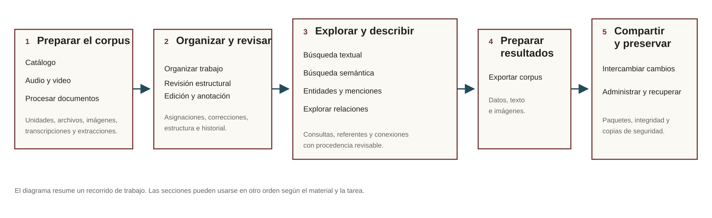

Trabajo archivístico e investigación local
Organizar, revisar y analizar archivos sin perder la procedencia.
Archive Workbench reúne catálogo, procesamiento documental, revisión de texto, autoridades, búsquedas, relaciones, exportación e intercambio en una aplicación que trabaja sobre copias locales del corpus.

Un recorrido para archivos heterogéneos
Descripción y procedencia
El catálogo distingue contextos de custodia, conjuntos documentales, recursos y contenedores. Los vínculos de producción y gestión se registran con período, evidencia e historial.
Texto revisable
Los originales no se reemplazan. Los derivados y las extracciones se versionan; cada página puede comparar candidatos antes de elegir cuál alimenta la capa editable.
Recuperación y relaciones
La búsqueda textual y la búsqueda semántica recuperan contenido revisado. Entidades, menciones y relaciones conservan su evidencia y pueden explorarse en un grafo derivado.
Salidas e intercambio
Las exportaciones registran configuración y huellas. Varias copias locales pueden intercambiar cambios mediante paquetes inspeccionables sin compartir una SQLite viva.
Qué requiere revisión manual
OCR, extracción, descubrimiento de entidades, búsqueda semántica y propuestas de estructura pueden asistir el trabajo. Archive Workbench conserva esas salidas como candidatas o resultados derivados y no las presenta como decisiones archivísticas o analíticas por sí solas.